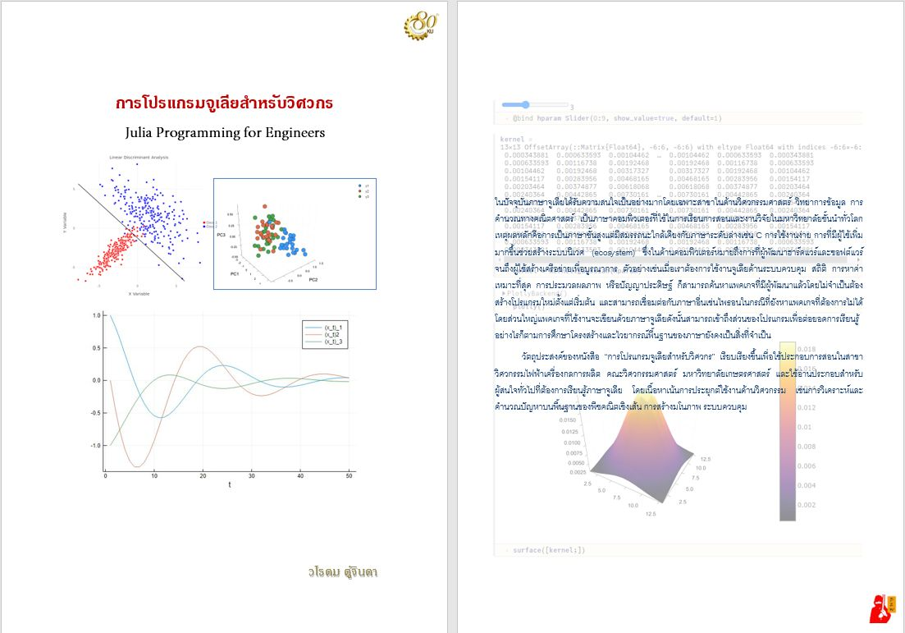

การโปรแกรมจูเลียสำหรับวิศวกร
Julia Progamming for Engineers

หมายเหตุ : หนังสือนี้อยู่ระหว่างการจัดทำ คาดว่าจะแล้วเสร็จปลายปี 2564
ในปัจจุบันภาษาจูเลียได้รับความสนใจเป็นอย่างมากโดยเฉพาะสาขาในด้านวิศวกรรมศาสตร์ วิทยาการข้อมูล การคำนวณทางคณิตศาสตร์ เป็นภาษาคอมพิวเตอร์ที่ใช้ในการเรียนการสอนและงานวิจัยในมหาวิทยาลัยชั้นนำทั่วโลก เหตุผลหลักคือการเป็นภาษาขั้นสูงแต่มีสมรรถนะใกล้เคียงกับภาษาระดับล่างเช่น C การใช้งานง่าย การที่มีผู้ใช้เพิ่มมากขึ้นช่วยสร้างระบบนิเวศ (ecosystem) ซึ่งในด้านคอมพิวเตอร์หมายถึงการที่ผู้พัฒนาฮาร์ดแวร์และซอฟต์แวร์จนถึงผู้ใช้สร้างเครือข่ายเพื่อบูรณาการ ตัวอย่างเช่นเมื่อเราต้องการใช้งานจูเลียด้านระบบควบคุม สถิติ การหาค่าเหมาะที่สุด การประมวลผลภาพ หรือปัญญาประดิษฐ์ ก็สามารถค้นหาแพคเกจที่มีผู้พัฒนาแล้วโดยไม่จำเป็นต้องสร้างโปรแกรมใหม่ตั้งแต่เริ่มต้น และสามารถเชื่อมต่อกับภาษาอื่นเช่นไพธอนในกรณีที่ยังหาแพคเกจที่ต้องการไม่ได้ โดยส่วนใหญ่แพคเกจที่ใช้งานจะเขียนด้วยภาษาจูเลียดังนั้นสามารถเข้าถึงส่วนของโปรแกรมเพื่อต่อยอดการเรียนรู้ อย่างไรก็ตามการศึกษาโครงสร้างและไวยากรณ์พื้นฐานของภาษายังคงเป็นสิ่งที่จำเป็น
วัตถุประสงค์ของหนังสือ “การโปรแกรมจูเลียสำหรับวิศวกร” เรียบเรียงขึ้นเพื่อใช้ประกอบการสอนในสาขาวิศวกรรมไฟฟ้าเครื่องกลการผลิต คณะวิศวกรรมศาสตร์ มหาวิทยาลัยเกษตรศาสตร์ และใช้อ่านประกอบสำหรับผู้สนใจทั่วไปที่ต้องการเรียนรู้ภาษาจูเลีย โดยเนื้อหาเน้นการประยุกต์ใช้งานด้านวิศวกรรม เช่นการวิเคราะห์และคำนวณปัญหาบนพื้นฐานของพีชคณิตเชิงเส้น การสร้างมโนภาพ ระบบควบคุม
สารบัญ
การใช้งานจูเลียเบื้องต้น
พื้นฐานพีชคณิตเชิงเส้น
ค่าและเวกเตอร์ลักษณะเฉพาะ
การประมวลผลภาพ
ฟังก์ชันและการหาอนุพันธ์อัตโนมัติ
สมุดบันทึกพลูโต